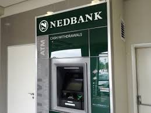

NEDBANK
South African-owned after the Bank Mees and Hope sold 20% of its shares. The South African counterpart was completely independent. The Dutch counterpart of the bank no longer exists. Syfrets SA and Boland Bank listed on the Johannesburg Stock Exchange in 1969. In 1971, NBSA changed its name to Nedbank. Nedbank Group formed from the merger of Syfrets SA, Union Acceptances and Nedbank in 1973. In 1986, Old Mutual became the major shareholder (53%) of Nedbank.In 1992, Syfrets, UAL Merchant Bank, and Nedbank Investment Bank Division merged to become Nedcor Investment Bank (NIB). Old Mutual, Nedcor's holding company, was demutualised and listed on the London Stock Exchange in 1999. It became a constituent of the FTSE 100 Index. Nedcor and Old Mutual joined in an offshore private banking venture and acquired the Isle of Man and Jersey private banking business of Robert Fleming & Co. in 2001. The new Nedcor Group was formed on 1 January 2003, combining Nedcor, BoE, Nedcor Investment Bank, and Cape of Good Hope Bank into one legal entity. The Nedcor Group was renamed the Nedbank Group on 6 May 2005. As part of the managed separation, on 15 October 2018, Old Mutual reduced its shareholding in Nedbank Group to 19.9%.
- 8h00am to 16h00pm-MONDAYS
- 8h00am to 16h00pm-TUESDAYS
- 8h00am to 16h00pm-WEDNESDAYS
- 8h00am to 16h00pm-THURSDAYS
- 8h00am to 16h00pm-FRIDAYS
- 9h00am to 12h00pm-SATURDAYS
- 9h00am to 11h00am-SUNDAYS
WHERE WILL YOU FIND THE STORE
You Will Find Nedbank On The Second Floor,There's Banks Passage On The Right Hand Side.
